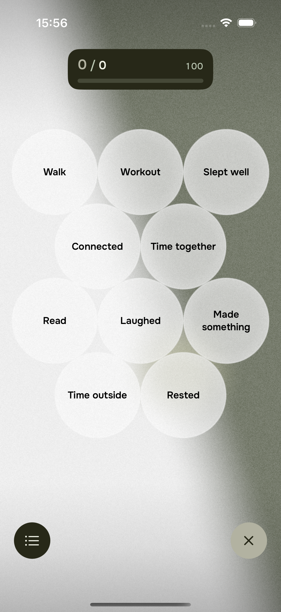
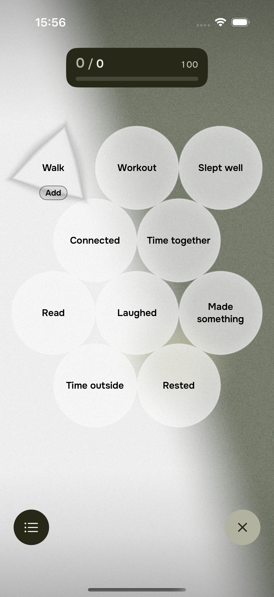
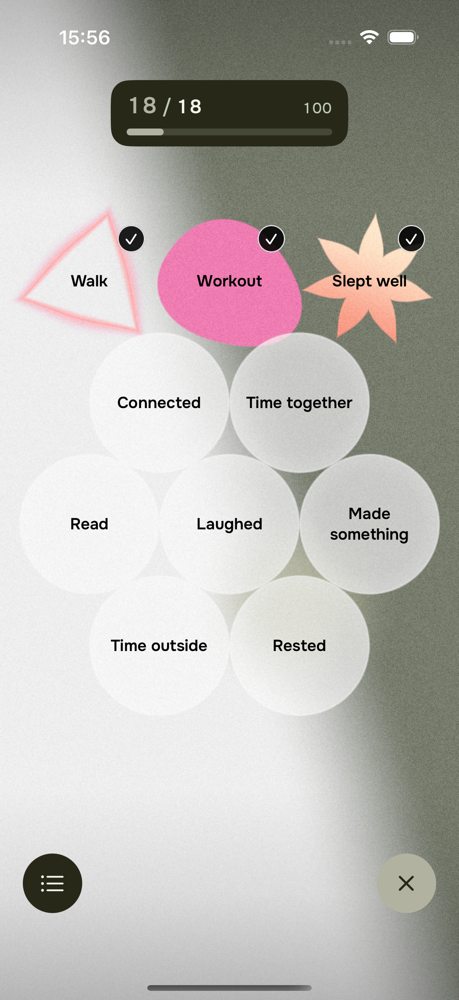
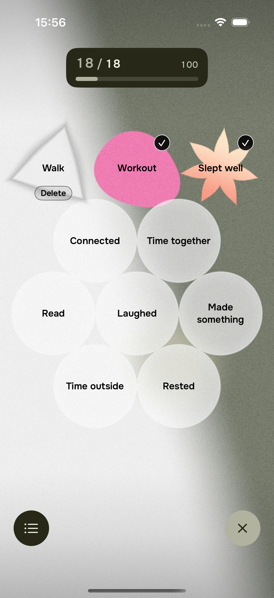
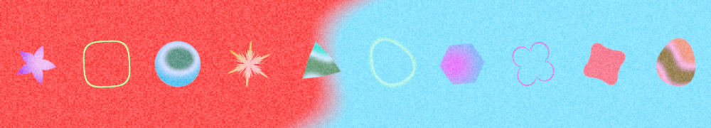
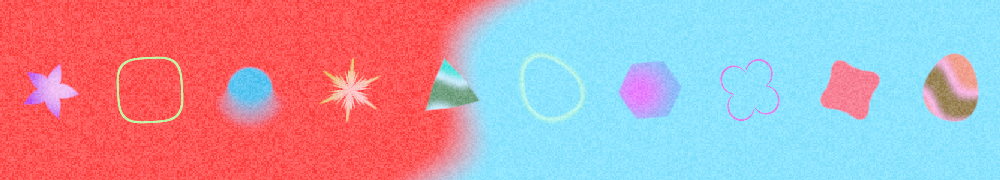
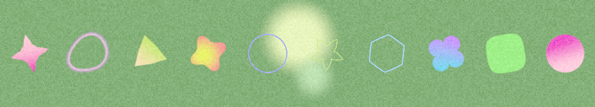
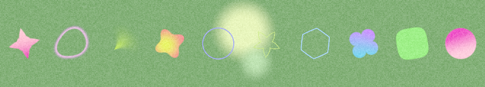
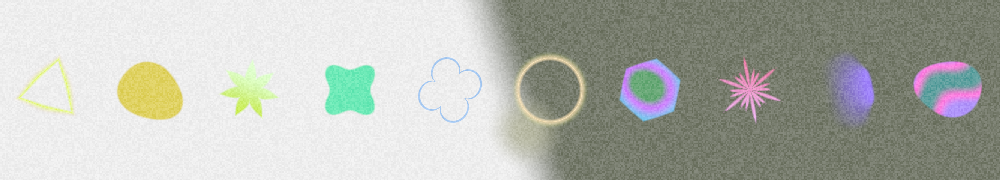
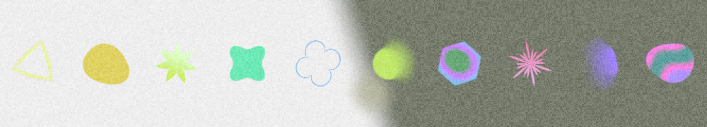

Первое нажатие превращает круг в бесцветную фигуру. Она мягко пульсирует, а подпись Add выделена рамкой. Второе нажатие добавляет событие: появляется цвет и галочка. При удалении фигура снова становится бесцветной и пульсирует с подписью Delete.
Размах пульсации — 2,5% размера за 1,6 секунды. Текст остаётся неподвижным. При включённом Reduce Motion остаётся статичная фигура с подписью в рамке.




Предыдущая правка изменила выбор силуэтов: новые события последовательно получают девять уже существовавших форм. Раньше один день мог ограничиваться одной или двумя повторяющимися формами.
Направленное размытие доступно четырём из девяти форм. После расширения выбора оно стало попадаться реже. Теперь, когда на холсте уже есть две фигуры, следующая подходящая новая фигура получает размытие, если его ещё нет. Сохранённые фигуры сохраняют свои параметры.
| Проверочный день | Размытых до | Размытых после |
|---|---|---|
| 10 сентября | 0 | 1 |
| 11 сентября | 0 | 1 |
| 12 сентября | 1 | 2 |
В каждой строке — те же десять событий и тот же день. Сравнение с предыдущей правкой меню; первые девять силуэтов уже различались в обеих версиях. На полосках показаны подтверждённые цветные фигуры. Изменился выбор материала для новых добавлений; контуры и настройки самого размытия сохранены.






Скриншоты и видео получены из приложения в iOS Simulator. Это проверка симулятора; установка и визуальная проверка на физическом устройстве в этой правке не выполнялись.
Точный список форм и материалов после правки · До правки · Предыдущее сравнение силуэтов